制作：吕群
None - Fade - Slide - Convex - Concave - Zoom
选择班级
幻灯片样式
Black (default) -
White -
League -
Sky -
Beige -
Simple
Serif -
Blood -
Night -
Moon -
Solarized
第16届亚运会将于2010年11月在广州举行。据此并结合所学知识，完成1-2题。
1．亚运会期间以下各城市白昼最长的是
A．北京
B．沈阳
C．广州
D．海口
2．亚运会期间太阳直射点位置及移动方向是
A．北半球，向南移动
B．北半球，向北移动
C．南半球，向南移动
D．南半球，向北移动
3．监测华北平原农作物病虫害影响范围，最快捷有效的方式是
A．遥感
B．地理信息系统
C．全球定位系统
D．人工实地调查
下表为联合国预测的2001-2050年世界移民趋势。据此并结合所学知识，完成4—5题。
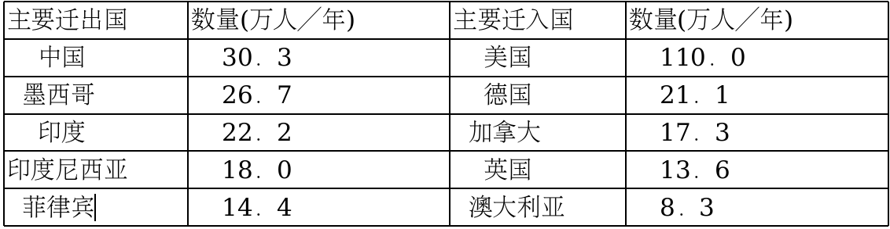4．世界人口迁移的主要趋向是
A．从内陆国家向沿海国家迁移
B．从发展中国家向发达国家迁移
C．从西半球向东半球迁移
D．从北半球向南半球迁移
5．移民外迁的最主要目的是寻求
A．更高的社会地位
B．更高的经济收入
C．更多的休闲时间
D．更优的自然环境
6．下列自然景观中能够反映非地带性的是
A．加拿大的亚寒带针叶林
B．亚马孙流域的热带雨林
C．广东的亚热带常绿阔叶林
D．塔里木盆地中的绿洲
7．下列自然景观主要由内力作用形成的是
A．黄河壶口瀑
B．华山西峰绝壁
C．广西桂林芦笛岩溶洞
D．海南天涯海角沙滩
8．季风气候最典型的地区是
A．亚洲东部
B．北美洲东部
C．欧洲西部
D．澳大利亚西部
9．图1为城市各功能区付租能力与距城市中心距离关系示意图。
与线段a、b、c付租能力相对应的城市功能区分别是
A．住宅区、工业区、商业区
B．商业区、工业区、住宅区
C．商业区、住宅区、工业区
D．工业区、商业区、住宅区
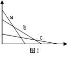10．广东鼎湖山自然保护区热量充足，降水丰沛，植被茂密，这
体现了地理环境的
A．差异性
B．单一性
C．整体性
D．均衡性
11．据报道，2009年10月岛国马尔代夫内阁成员身穿潜水服，在水下6米深处举行了特
别会议，讨论海平面上升对该国的影响。此举旨在呼吁全球各国重视的环境问题是
A．臭氧层空洞
B．地面沉降
C．海啸问题
D．全球变暖
12．下列经济部门中，受气候条件影响最大的是
A．铁路运输业
D．信息服务业
C．服装加工业
D．水稻种植业
13．目前我国面临的主要人口问题是
A．人口自然增长率低
B．人口素质不断下降
C．人口基数大
D．人口流动性小
14．下列日照图中(图2，箭头表示太阳光线)，能正确反映春分日日照状况的是
A．①
B．②
C．③
D．④
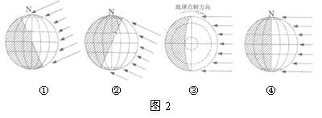15．我国是一个地质灾害多发的国家。下列各地中，最易发生泥石流的是
A．横断山区
B．塔里木盆地
C．内蒙古高原
D．珠江三角洲
16．当南亚盛行西南季风时
A．珠江正值枯水期
B．黄河出现冰情
C．长江正值汛期
D．澳大利亚正值一年最热时期
17．南极洲至今无人定居的主要原因是
A．社会经济落后
B．自然条件恶劣
C开发历史较短
D．矿产资源贫乏
18．最终决定各地农业生产类型和规模的社会经济因素是
A．国家政策
B．科技水平
C．市场需求
D交通条件
19．由沿海向内陆的地域分异规律(经度地带性)表现最典型、尺度最大的地区是
A．北美大陆低纬地区
B．亚欧大陆中纬地区
C．南美大陆中纬地
D．非洲大陆低纬地区
读“1800-2000年世界城市化水平图”(图3)，结合所学知识，完成20-21题。
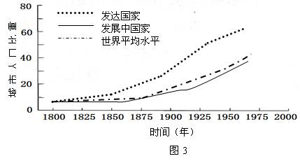20．由图可知
A．1800年前后，世界范围内城市化水平差距大
B．发展中国家城市化水平高于发达国家
C．发展中国家城市人口数量始终少于发达国家
D．发展中国家城市化起步晚
21．有关城市化，下列叙述不正确的是
A．城市化导致建设用地增加
B．城市化改变了居民就业结构
C．城市化改变了人口空间分布
D．城市建筑物的高度改变了太阳高度角
22．下列有关南亚季风叙述正确的是
A．气压带、风带的季节移动是形成南亚季风的原因之一
B．南亚夏季风主要受亚洲高压影响
C．受南亚夏季风影响时，印度西南部温和少雨
D．受青藏高原阻挡，我国不受南亚季风影响
23．纬度30o-40o之间大陆西岸地区气候的主要特征是
A．终年高温少雨
B．夏季高温干燥，冬季温和多雨
C．终年温和多雨
D．夏季高温多雨，冬季寒冷干燥
24．下列地理现象表现为由赤道到两极地域分异规律(纬度地带性)的是
A．我国东部自南向北出现针叶林一落叶阔叶林一常绿阔叶林景观
B．非洲从赤道向北依次分布着热带雨林一热带草原一热带荒漠景观
C．珠穆朗玛峰北坡自山麓到山顶依次出现草原一荒漠一冰川景观
D．我国中纬地区自然景观自东向西依次出现森林一草原一荒漠景观
25．某城镇盛行东南风，拟建一化工厂(如图4示意)，下列布局方案较为合理的是
A．
B．②
C．③
D．④
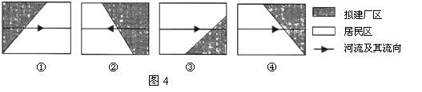26．近年来珠江三角洲作为全国商品粮基地的地位明显下降，主要原因是
A．城市化推进速度快，人均耕地减少
B．珠江口咸潮加剧，影响粮食生产
C．夏秋季节多台风，粮食生产不稳定
D．工业污染严重，粮食产量下降
27．低碳经济谋求低能耗、低排放、低污染。发展低碳经济，应大力开发
A．煤炭
B．石油
C．天然气
D．太阳能
读“我国某地区生态环境问题的成因与危害示意图”(图5)，结合所学知识，完成28-29题。
28．图中所示的环境问题是
A．荒漠化
B．臭氧层空洞
C．水土流失
D．全球变暖
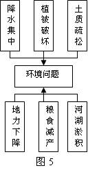29．图示环境问题最严重的地区是
A．黄土高原
B．塔里木盆地
C．东北平原
D．长江三角洲
30．地中海沿岸地区所属的自然带主要是
A．亚热带常绿阔叶林带
B．亚热带常绿硬叶林带
C．温带落叶阔叶林带
D．亚寒带针叶林带
31．某日某时，地球朝向太阳一侧的所有地区，短波通讯几乎
全部中断。出现这一现象的原因是
A．太阳活动引发地球大气电离层扰动
B．臭氧层破坏引起地面紫外辐射增强
C．火山爆发导致大气能见度降低
D．太阳黑子增多造成地球磁场紊乱
读图6，结合所学知识，完成32-34题。
32．如果该图表示南大西洋洋流模式，则
A．洋流①对沿岸地区有降温减湿作用
B．洋流②主要是在西风影响下形成的
C．洋流③对沿岸地区有增温增湿作用
D．洋流④为寒流
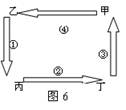33．如果该图表示海陆间水循环模式，丙处为陆地，丁处为海洋，那么
A．环节①为蒸发蒸腾
B．环节②为径流
C．环节③为水汽输送
D．环节④为降水
34．如果该图表示局部地区大气热力环流，则
A．甲、乙两处气压相等
B．丁处必为晴朗天气
C．丙处为高压
D．丙处温度较丁处高
35．大洋洲某岛屿附近漂浮着一座来自南极冰架的巨大冰山，为了航行安全，需对此冰山
进行动态监测，可采用的最佳手段是
A．3S(RS、GIS、GPS的统称)技术
B．大比例尺地形图量测
C．实时录像监控
D．实地调查①
36．下列城市中，服务范围最小的是
A．武汉
B．广州
C．西安
D．井冈山
读“珠三角与周边地区区域合作示意图”(图7)，结合所学知识，完成37-38题。
37．关于图中箭头代表的含义，表述正确的是
A．实线箭头代表资源和能源
B．实线箭头代表技术和资金
C．虚线箭头代表资源和技术
D．虚线箭头代表能源和资金
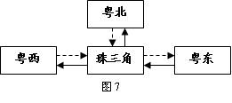38．珠三角石化企业向粤西转移带来的可能影响有
A．大量公司总部向粤西地区转移
B．不利于珠三角地区的产业升级
C．减轻珠三角地区的环境压力
D．大量廉价劳动力向珠三角地区转移
39．为缓解我国西北地区农业用水不足问题，最可行的措施是
A．利用科技手段，增加冰雪融水量
B．限制畜牧业发展，大力发展林业
C．因地制宜，发展节水农业
D．人工降雨，增加地表径流
40．全球变暖带来的影响有
A．丸气象灾害减少
B．南极冰川面积扩大
C．全球温度带北移
D．海平面上升
41．从地转偏向力考虑，理想状态下，下列示意图中(图8，空心箭头表示水流初始运动
方向，虚线箭头表示水流实际运动方向)，能正确表示北半球水流流向的是
A．①
B．②
C．③
D．④
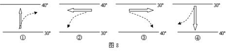42．下列关于广东省农业发展的叙述，正确的是
A．扩大温带水果种植面积
B．大力发展陡坡地种植业
C．进一步扩大商品粮基地规模
D．重点发展水产品养殖与加工业
43．商业网点布局规划适宜采用的地理信息技术是
A．GIS
B．GPS
C．RS
D．RS和GPS
44．人类活动影响最深刻最集中的地域类型是
A．海洋
B．乡村
C．城市
D．草原
45．下列岩石中，最有可能找到化石的是
A．花岗岩
B．石灰岩
C．大理岩
D．玄武岩
46．下列货物运输与所选择的运输方式对应最合理的是
A．50万吨煤炭从山西运往天津——水路运输
B．从北京运往美洲海地的救援物资——航空运输
C．北京郊区水库的活鱼运往城内市场——铁路运输
D．20万吨粮食从大连运往广州——公路运输
47．下列各组地域单元中，区域划分依据相同的是
A．云贵高原、四川盆地、东北平原、山东丘陵
B．长江流域、云贵高原、东南丘陵、干旱地区
C．亚热带、中纬度、亚欧大陆、华北平原
D．广东省、湖南省、广州市、湿润地区
48．人类社会发展历程中，人地矛盾最剧烈的时期是
A．采猎时代
B．农业时代
C．工业时代
D．后工业时代
读“堰塞湖形成示意图”(图9)，结合所学知识，完成49—50题。
49．图中堰塞湖形成的直接原因可能是
A．滑坡
B．修建大坝
C．风化作用
D．侵蚀作用
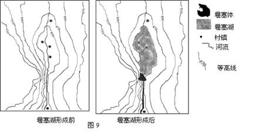50．应对堰塞湖溃坝危害的最佳措施是
A．撤离堰塞体上游居民
B．加固堰塞体
C．开挖泄洪通
D.一次性摧毁堰塞体
51．图10为城市某功能区一天内不同时段的
人口流动状况示意图，由图可知该功能区是
A．商业区
B．住宅区
C．工业区
D．行政区
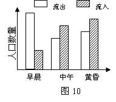52．城市中心商务区的形成主要是由于
A．气候因素
B．宗教因素
C．经济因素
D．地形因素
53．图11为海陆风示意图，此图表示的昼夜状况和风是
A．白天，海风
B．夜晚，海风
C．夜晚，陆风
D．白天，陆风
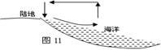54．下列解决青藏高原牧区能源问题的最合理措施是
A．樵采天然植被
B．开发利用太阳能
C．大力发展薪炭林
D．加大煤炭的开采
55．我国南方地区以水田农业为主，北方地区以旱地农业为主，西北地区发展畜牧业。形
成这种生产活动地域差异的主要自然因素是
A．降水
B．地形
C．土壤
D．热量
读“甲、乙两类工业生产成本构成示意图”(图12)，结合所学知识，完成56-57题。
56．甲类工业生产成本比重最大的是
A．原料运费
B．产品运费
C．工资投入
D．科技投入
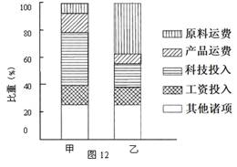57．乙类工业部门最可能是、
A．制糖工业
B．印刷工业
C．航天工业
D．电子装配工业
位于喜马拉雅山脉南麓的西藏墨脱县，是我国目前唯一不通公路的县，正在建设中的
墨脱公路将于2012年建成通车。结合所学知识，完成58-60题。
58．墨脱公路建设难度大的主要原因是
A．终年多雨
B．植被茂密
C．地质条件复杂
D．公路设计等级高
59．该县境内雅鲁藏布江河段航运价值低，其主要原因是
A．封冻期长
B．落差大
C．流量小
D．含沙量大
60．墨脱公路建成后有利于
A．发挥该县的交通优势
B．加强对外物资和文化的交流
C．改善生态环境
D．将经济优势转化为资源优势
61．当地球位于公转轨道的远日点，此时
A．地球公转速度较快
B．地球公转速度较慢
C．是每年的1月初
D．是每年的7月初
62．下列地理过程属于风化作用的是
A．植物根系撑大岩石裂隙
B．烈日曝晒岩石破碎
C．风力侵蚀形成风蚀蘑菇
D．暴雨冲刷形成冲沟
63．关于城市化的叙述正确的是
A．城市化水平是城市人口与乡村人口的比值
B．城市化过程中，乡村人口转化为城市人口
C．城市化过程中，农业用地转化为城市用地
D．城市化影响工业化，工业化对城市化不产生影响
64．减少大气中二氧化碳含量行之有效的措施是
A．将石油和煤炭转化为气态燃料
B．全面禁止使用氟氯烃类制冷物质
C．植树造林，增加绿地面积
D．开发新能源，减少化石能源的使用
65．长江三峡水利枢纽工程的建设有利于
A．航运、发电和灌溉
B．防治水污染，净化水源
C．鱼类洄游产卵，保护流域生态环境
D．调节河川径流的季节变化，抵御洪水
66．城市中大面积绿化带的主要作用有
A．净化城市空气
B．减轻酸雨危害
C．防止水土流失
D．减轻“热岛效应”强度
67．图13为工业区位因素影响力随时间变化示意图，据此判断
A．甲表示劳动力数量因素
B．乙表示原料因素
C．乙表示信息因素
D．甲表示市场因素
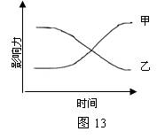68．发展中国家较发达国家更容易引发环境问题，其
主要原因是
A．人口压力大
B．人口分布不均
C．经济技术水平低
D．环保法规不完善
69．近30年来，珠江三角洲地区城市化进程加快，
主要表现在
A．出现逆城市化现象
B．城市规模扩大
C．城镇数量增加
D．人口自然增长率增加
70．区域农业生产与地理环境密切相关。下列组合合理的是
A．四川盆地——绿洲农业
B．宁夏平原——灌溉农业
C．长江三角洲——大牧场放牧业
D．洞庭湖平原——水稻种植业